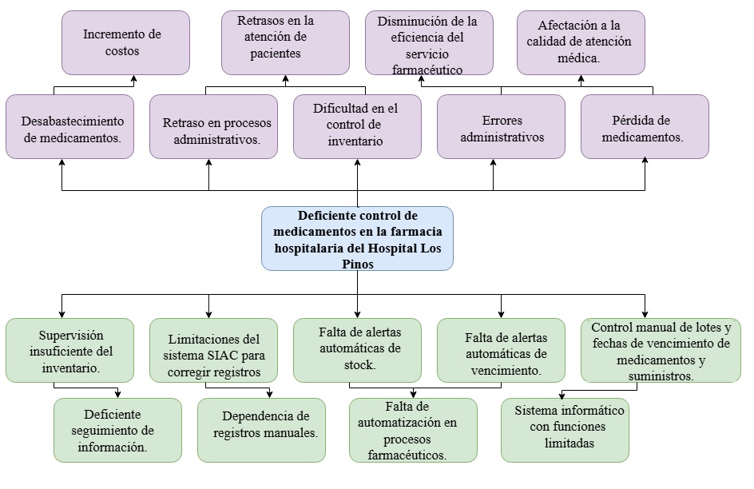
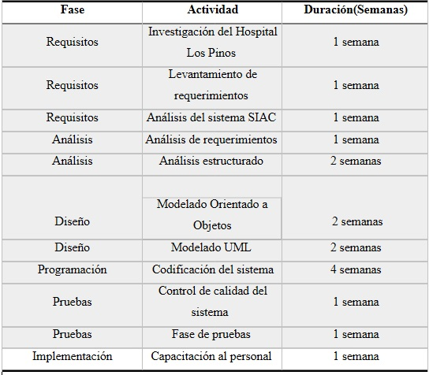
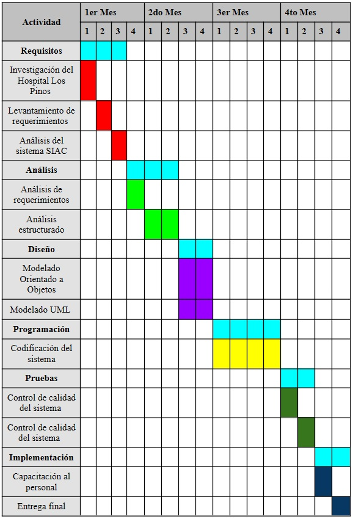
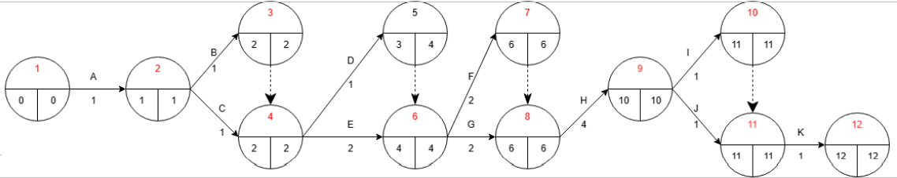

Generalidades y Marco Teórico
1. Introducción
En la actualidad, las instituciones de salud requieren sistemas informáticos eficientes que optimicen la gestión de suministros para garantizar una atención de calidad. La Farmacia Hospitalaria cumple un rol fundamental, siendo responsable del control, almacenamiento y dispensación de medicamentos e insumos médicos esenciales para los tratamientos clínicos.
A pesar de su importancia, en muchos centros hospitalarios la administración logística aún presenta procesos manuales o depende de sistemas con capacidades limitadas. Esta situación suele derivar en deficiencias en el seguimiento de lotes y el control de fechas de vencimiento, lo que incrementa el riesgo de errores administrativos, pérdidas económicas por fármacos caducados y posibles retrasos en la atención al paciente.
Tras un diagnóstico realizado en la farmacia del Hospital Los Pinos, se identificó que, si bien se utiliza el sistema SIAC para funciones operativas básicas, persisten tareas manuales para la supervisión de niveles de stock y alertas preventivas. Existe una carencia de herramientas automatizadas que notifique la proximidad de vencimientos o el desabastecimiento de insumos clave.
El presente proyecto propone el análisis y diseño de un “Sistema de Control de Medicamentos para Farmacia Hospitalaria”. El objetivo es proporcionar una solución tecnológica orientada a automatizar la gestión de inventarios, optimizar la administración de lotes y fortalecer el control interno mediante alertas, contribuyendo a una administración más segura y eficiente de los recursos farmacéuticos de la institución.
2. Antecedentes
El Hospital Municipal Los Pinos es una institución pública de salud de segundo nivel perteneciente al Gobierno Autónomo Municipal de La Paz, ubicada en la zona Los Pinos de la ciudad de La Paz. Inició sus actividades en el año 2010 y cuenta con un equipo multidisciplinario orientado a brindar atención médica a la población en general. El hospital ofrece diferentes servicios como consulta externa, emergencia las 24 horas, laboratorio, internación y farmacia hospitalaria, además de especialidades médicas en áreas como medicina interna, cirugía general, ginecología, pediatría, traumatología y terapia intensiva. Asimismo, atiende a pacientes beneficiarios de programas de salud pública y servicios gratuitos, contribuyendo al cuidado y mejoramiento de la calidad de vida de la población paceña.
Según la investigación y la entrevista realizada al personal de farmacia, actualmente se utiliza el sistema SIAC para el registro de recetas médicas y control básico de medicamentos. A pesar del uso del sistema SIAC, aún existen limitaciones en algunos procesos de control farmacéutico.
3. Planteamiento del Problema
Actualmente la farmacia hospitalaria del Hospital Los Pinos utiliza el sistema SIAC para el registro de recetas médicas y el control básico de medicamentos. Sin embargo, durante la investigación realizada se identificó que varios procesos continúan efectuándose de forma manual, especialmente el control de inventario, lotes y fechas de vencimiento de medicamentos.
Asimismo, se evidenció la absence de alertas automáticas para medicamentos próximos a vencer y para niveles bajos de stock, lo que dificulta una adecuada supervisión del inventario. Además, cuando existen errores en los registros de descarga de medicamentos, el sistema actual no permite realizar correcciones directas de manera sencilla.
Estas limitaciones en consecuencia pueden generar pérdidas de medicamentos, retrasos en los procesos administrativos y dificultades en el control eficiente de inventarios dentro de la farmacia hospitalaria. Por ello, surge la necesidad de diseñar un sistema que permita mejorar el control y gestión de medicamentos mediante herramientas automatizadas y un mejor seguimiento de la información.
4. Árbol de Problemas

5. Formulación del Problema
¿Cómo mejorar el control de medicamentos en la farmacia hospitalaria del Hospital Los Pinos mediante el diseño de un sistema que permita gestionar el stock, controlar fechas de vencimiento y generar alertas automáticas?
6. Propósito del Estudio
El presente proyecto tiene como propósito analizar y diseñar un sistema de control de medicamentos para farmacia hospitalaria, orientado a mejorar el control de inventario, el seguimiento de medicamentos y la gestión de procesos relacionados con stock y fechas de vencimiento en el Hospital Los Pinos.
6.1 Objetivo General
Diseñar un sistema de control de medicamentos para la farmacia hospitalaria del Hospital Los Pinos, que permita mejorar la gestión de inventario, el control de vencimientos y la supervisión de stock mediante procesos automatizados.
6.2 Objetivos Específicos
- Analizar el funcionamiento actual de la farmacia hospitalaria del Hospital Los Pinos.
- Identificar los problemas relacionados con el control de medicamentos y gestión de inventario.
- Diseñar un sistema que permita automatizar el control de lotes y fechas de vencimiento.
- Diseñar funciones de alertas automáticas para medicamentos próximos a vencer y niveles bajos de stock.
- Modelar el sistema utilizando análisis estructurado y diagramas orientados a objetos.
- Proponer una solución que contribuya a mejorar la eficiencia en los procesos de farmacia hospitalaria.
7. Metodología de Investigación
7.1 Método de Investigación
Para el desarrollo del presente proyecto se emplearon los métodos descriptivo y analítico.
El método descriptivo permitió identificar y caracterizar la situación actual de la farmacia hospitalaria del Hospital Los Pinos, analizando los procesos relacionados con el control de medicamentos, la gestión de inventarios, el manejo de lotes, el control de fechas de vencimiento y la supervisión de niveles de stock.
Por otra parte, el método analítico permitió examinar las causas y consecuencias de las deficiencias detectadas en los procesos actuales, tales como el control manual de medicamentos, la ausencia de alertas automáticas y las limitaciones del sistema SIAC. Este análisis facilitó la identificación de requerimientos y necesidades que servirán como base para el diseño del Sistema de Control de Medicamentos para Farmacia Hospitalaria.
La aplicación conjunta de ambos métodos permitió comprender el funcionamiento actual de la farmacia, detectar problemas existentes y plantear una propuesta de solución orientada a mejorar la gestión y el control de medicamentos dentro de la institución.
7.2 Medios de Investigación
- Observación Directa: Se realizó la observación de las actividades desarrolladas en la farmacia hospitalaria del Hospital Los Pinos con el propósito de conocer el funcionamiento actual de los procesos relacionados con el almacenamiento, control, dispensación y registro de medicamentos. Este medio permitió identificar procedimientos manuales, dificultades operativas y aspectos susceptibles de mejora.
- Entrevista: Se efectuó una entrevista al personal responsable del área de farmacia con el fin de recopilar información acerca del funcionamiento del sistema SIAC, los procedimientos utilizados para el control de medicamentos y las dificultades que se presentan en las actividades diarias. La información obtenida permitió conocer las necesidades reales del área y definir los requerimientos del sistema propuesto.
- Revisión documental: Se revisó información relacionada con los procedimientos de control de medicamentos, registros utilizados por el área de farmacia, documentación disponible sobre el sistema SIAC y bibliografía especializada en gestión farmacéutica y análisis de sistemas. Esta revisión permitió complementar y validar la información obtenida mediante la observación y las entrevistas.
7.3 Instrumentos de Investigación
- Guía de Observación: Instrumento utilizado para registrar de manera sistemática las actividades observadas dentro de la farmacia hospitalaria, permitiendo identificar procesos, procedimientos, controles y posibles deficiencias relacionadas con la gestión de medicamentos.
- Cuestionario de Entrevista: Documento compuesto por preguntas dirigidas al personal responsable de farmacia, orientadas a conocer las características del sistema actual, las dificultades operativas existentes y los requerimientos necesarios para mejorar el control y administración de medicamentos.
- Registro de Información: Se emplearon notas y registros escritos para documentar la información obtenida durante el proceso de investigación, facilitando su organización, análisis e interpretación para el desarrollo del proyecto.
7.4 Justificación
La presente investigación surge ante la necesidad de fortalecer el control y la administración de medicamentos dentro de la farmacia hospitalaria del Hospital Los Pinos.
Durante el estudio realizado se identificó que algunos procesos continúan desarrollándose de forma manual, especialmente aquellos relacionados con el control de lotes, fechas de vencimiento y supervisión de niveles de stock. Asimismo, se evidenció la ausencia de alertas automáticas que permitan detectar oportunamente medicamentos próximos a vencer o niveles bajos de inventario, así como ciertas limitaciones del sistema SIAC para realizar controles más eficientes.
El diseño de un Sistema de Control de Medicamentos permitirá optimizar la gestión farmacéutica mediante la automatización de procesos, mejorar el seguimiento de medicamentos, reducir errores administrativos, minimizar pérdidas por vencimiento y contribuir a una atención más eficiente y segura para los pacientes.
Además, la propuesta proporcionará una herramienta tecnológica que apoye la toma de decisiones, fortalezca el control interno de la farmacia hospitalaria y contribuya a mejorar la calidad de los servicios prestados por la institución. Asimismo, el proyecto permitirá aplicar los conocimientos adquiridos en la asignatura de Análisis y Diseño de Sistemas mediante el uso de metodologías, técnicas y herramientas de modelado estructurado y orientado a objetos.
7.5 Alcances
- Gestionar el registro de medicamentos e insumos médicos.
- Controlar el inventario de medicamentos.
- Registrar y administrar lotes de medicamentos.
- Realizar el seguimiento de fechas de vencimiento.
- Generar alertas automáticas para medicamentos próximos a vencer.
- Generar alertas automáticas para niveles bajos de stock.
- Registrar movimientos de ingreso y salida de medicamentos.
- Facilitar la consulta de información relacionada con existencias, lotes y movimientos de inventario.
- Mejorar el control y seguimiento de los procesos farmacéuticos.
8. Planificación de Actividades
8.1 Cronograma

8.2 Diagrama de Gantt

8.3 Diagrama PERT

Duración total del proyecto: 12 semanas.